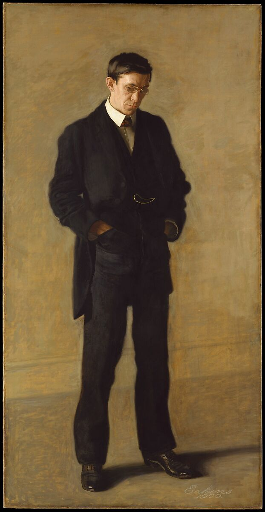
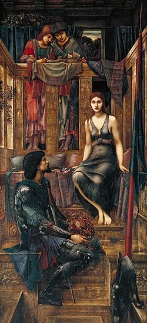
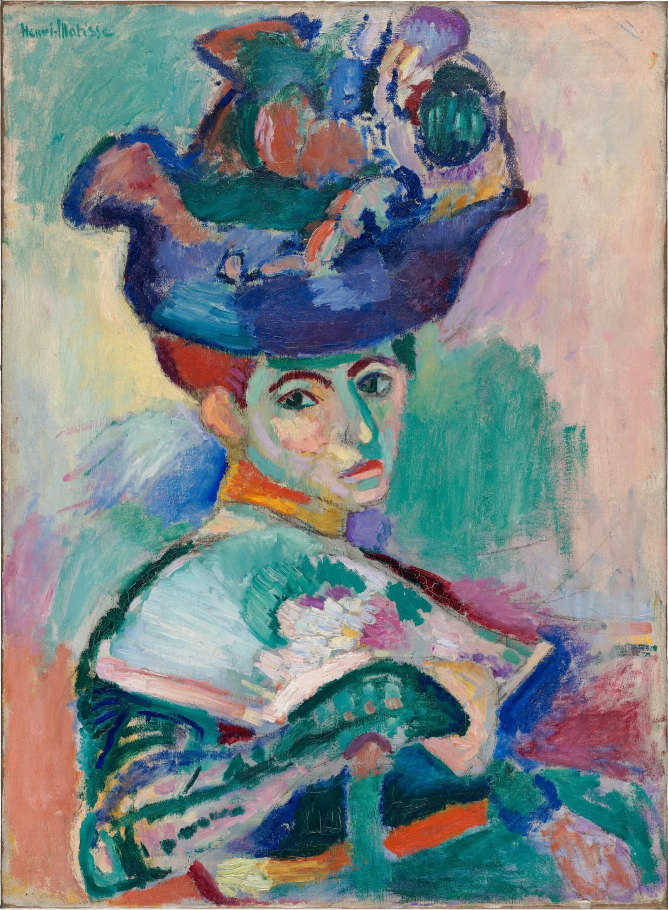
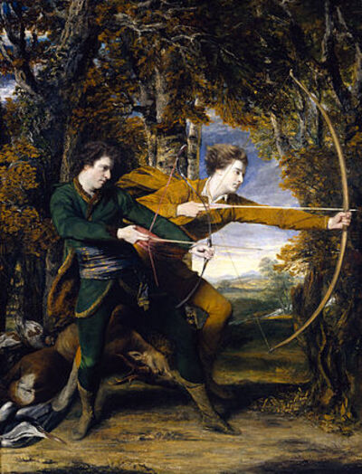
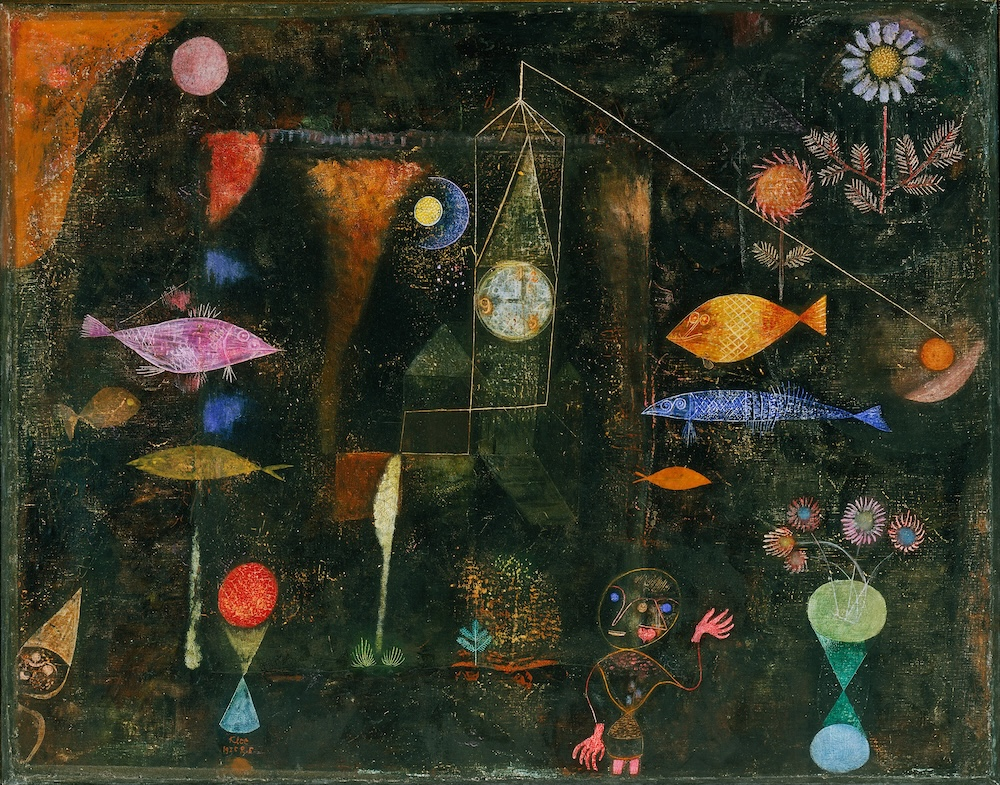
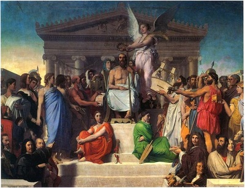
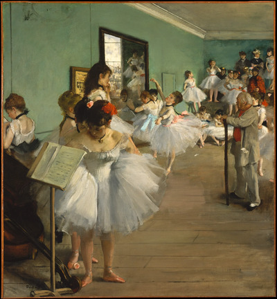

The Castle & Four Creatures
In Fourth Mansions, Lafferty draws on Teresa of Avila’s Interior Castle (1577), a mystical work describing the soul’s journey through seven “mansions” toward union with God. The Fourth Mansions represent a critical threshold: the meeting of the natural and supernatural, where the devil can do particular harm.
Four creature-types surround this Castle, each representing a force that could help or hinder humanity’s ascent. Click any quadrant to explore.
Teresa of Avila’s Interior Castle
Teresa of Avila (1515–1582), Spanish Carmelite nun and Doctor of the Church, wrote The Interior Castle as a guide to contemplative prayer. Bagley tells Freddy that the Interior Castle framework comes from “the beautiful things of a lady named Teresa Cepeda, born a little after Columbus died. He only discovered continents; she discovered the Castle itself.”
Lafferty uses three Teresa epigraphs in the novel, each illuminating a different aspect of the spiritual struggle:
“For there are all these obstacles for us to meet and there is also the danger of serpents.”
— Chapter 1 epigraph
“So they get it into their heads that it is arrobamiento, or rapture. But I call it abobamiento, foolishness.”
— Chapter 5 epigraph (on the Harvesters’ mutation)
“For I have written at great length of these Mansions (the fourth), as these are they where the greatest number of souls enter. As the natural is first united with the supernatural in these, it is here that the devil can do most harm.”
— Chapter 7 epigraph
Teresa describes the soul as a castle made of diamond or crystal, containing seven “dwelling places” or mansions, with God at the center:
The Four Creatures in Lafferty’s Schema
Bertigrew Bagley, the “patrick” of Tulsa, explains to Freddy Foley that four creature-types surround the Castle, representing forces that have always contested humanity’s spiritual ascent. These correspond roughly to Michael Fountain’s “interior symbols” but Bagley insists they are real, not merely psychological.
“Old Gaffer, we are real. We are the abiding men, we are the abiding monsters, and we are real.” Croll, the Patrick of Baltimore
Fountain’s academic lecture describes them as symbols used by “animals in the process of becoming men,” the Toad as loathsome origin, death, and rebirth; the Python as illicit wisdom; the Falcon as tyranny; the Badger as stubborn rear-guard defense. But the novel insists these are not merely interior archetypes. They manifest in actual groups contesting for the world.
The Jung epigraph to Chapter 13 states the principle:
“The psychological rule says that when the inner situation is not made conscious, it happens outside as fate. That is to say, when the individual remains undivided and does not become conscious of his inner contradictions, the world must perforce act out the conflict and be torn into opposite halves.” C. G. Jung, Aion (Chapter 13 epigraph)
Suppressed monsters can reappear as forces tearing the world apart. This is one way to read the relation between the Jung epigraph and the novel’s conflicts. Foley’s achievement is to integrate all four, becoming conscious of his inner contradictions and opening a possible way beyond the repeating cycle.
The Seven Cities
Lafferty provides an archaeological metaphor for humanity’s spiritual history in a Chapter 6 epigraph:
“There is what seems like a regular pattern of excavated cities. From the bottom, three cities, each more advanced in artifact and building, one atop another; then a city of total destruction: following above will be three more cities showing advance and again a fourth showing total destruction.” Chapter 6 epigraph
This is the “failed or broken cycle,” growth, peak, destruction, repeat. Four cities, over and over. But much more rarely, at places like Leros, Lough Dorg, Angkor Kong, and Chichen-Ticul, archaeologists find the “cycle of the full seven cities”:
“In these cases we find the first three cities of ascending worth, then the fourth or ‘confusion’ plateau which reveals contradictory and exciting values, fragmentary but contained destruction, and grandiose foundations: above this in each case are the fifth and sixth cities, which can only be called marvelous both in their attainments and in their balance and their prophecy: above these are the truncated bases of the seventh cities, which are absolutely unique even in their low remnants.” Chapter 6 epigraph
The Fourth City, like the Fourth Mansions, is the crisis point. Most civilizations never get past it. They destroy themselves at the “confusion plateau” and start over. But a few have broken through to the Fifth and Sixth Cities, glimpsed the Seventh. The question the novel asks is whether this cycle, this world, can break through, or whether it will fall back to the First again.
The Central Question: Cycle or Spiral
The Returnees (Toads) have kept humanity trapped in a repeating cycle for millennia. Their job has been simple:
“To bump the world at one critical point, to ensure that it dropped once more into its old repeating cycle, that it did not break out of the cycle into ascending spiral. Three cities, each more advanced in artifact and building and spirit: these had been. Then the fourth city, the city of destruction. And then let it repeat.” The Returnees’ mission
They caused the Black Death to “reset” civilization. They corrupt revolutions so they succeed wrongly. Their goal is to prevent humanity from ever breaking out of the cycle into an ascending spiral, from ever reaching the Fifth Mansions.
There is also a third vision. Michael Fountain wants the cycle to diminish:
“The cycle, of course, cannot be permitted to become an ascending or outgrowing spiral. Neither can it be permitted to remain a simple cycle forever. It must become a diminished concentric with each turn of it smaller and more refined than the last. We will diminish to a point. We will concentrate in one point.” Michael Fountain’s lecture
Fountain envisions humanity shrinking with each turn, fewer and fewer people, more and more “refined,” until only “three or four exceptional men” are left, and then dissolution into the original Great Man. The patricks oppose this: “The patricks and their castles will stand against him in that.”
Against both repetition and diminishment stands the hope of the spiral, the “helical springtime”:
“It will not be repetition, it will not be beginning again in the old way. It will be a tumultuous springtime higher on the helical, the ascending spiral; with birds more songful, colts more clattering, earth more burgeoning, spirits more exalted, sky more eternal. It is only after we have broken the wraith winter that we may have our helical springtime, that we may finally enter our Fifth Mansions.” Maurice Craftmaster, “Prose Poems”
The novel asks whether the cycle can be broken and whether humanity can ascend. The patricks have been waiting thousands of years for a call that never comes. The Falcons offer violent reaction rather than transcendence, and the Pythons offer a false mutation. Only Fred Foley, integrating all four, offers the possibility of something new.
“Would the next Mansions be the First again? Or the Fifth?” Final lines of the novel
The Harvesters & Brain-Weave
The Harvesters are a group of seven intellectuals who practice “brain-weaving,” a form of psychic communion that links their minds into a single organism. They represent the Python: illicit wisdom, gnostic aspiration, the many-armed Hydra. Their goal is to force human evolution through self-induced mutation, bypassing the natural order.
“The Python symbol is illicit wisdom; the python is a man-image as seen by pre-man (hairless, unnaturally mobile-appearing man was somewhat snake-like to the more hairy and less supple and less articulated pre-men, even when pre-men and man were combined in one person).”Michael Fountain’s lecture
The Brain-Weave
The brain-weave is a psychic network linking seven (later nine) persons into a shared consciousness. Members can communicate telepathically, share sensory experiences, and exert influence over each other and outsiders. Each member contributes a distinct psychic “flavor” to the weave; Freddy describes feeling “icy elegance, green-mottled humor, helical passion, cinnamon-colored dying, ashen weeping of dead Letitia. . . Klee-fish and the comical death-bubbles.”
The weave is compared to a seven-armed creature, and Auclaire, the Patrick of Pecos, identifies it as literally the same entity as the seven-tentacled monster (pólipo maldito) he guards in his fountain. The Harvesters are not only connected by the weave; on Auclaire’s identification they are the weave, tentacles of a creature that has escaped its ancient containment.
The Harvesters first use Fred Foley as a psychic test subject, prompting his investigation of Carmody Overlark. His contact with the brain-weave leaves him able to perceive its members, communicate across distances, and eventually receive its mastery when Bauer’s control collapses.
“I never shot a gun in my life. But yes, now I know how to shoot it.”The thirteenth victim, writing under psychic compulsion
The weave is not inherently evil, but it has been corrupted by Jim Bauer’s domination and gnostic theology. When Hondo Silverio breaks Bauer’s control and throws the weave to Foley, it becomes “a new weave,” potentially a force for integration rather than destruction.
The Original Seven
Each member contributes a distinct psychic “flavor” to the weave. Lafferty gives each a memorable epithet:
James Bauer
The master of the weave, a “pan-math, a catchword artist” with “startling mental stamina and well-bottomed memory.” Bauer dominates the group through sheer psychic force and theological conviction. He forces the mutation experiment, kills his wife Letitia during the ritual, murders thirteen prominent men through psychic compulsion, and recruits the demon Baubo.
“We’ll shatter the sky like the dirty glass it is, the unauthorized membrane that has shut us off from life.”
Dies in psychic combat with Arouet Manion, falling “down the world cliff,” an eternal fall into interior infinity.
Letitia Bauer
Jim’s wife, described as danger-loving. Her psychic flavor is “ashen weeping” and “danger-incitement.” Killed by Bauer during the mutation ritual with a violent knife-blow. Continues in the weave as “Letitia Dead,” an ashen ghost waiting in anguish for Bauer to fall past her into hell.
“What if we receive everything ever and I still want to say ‘No, no, that is not near enough’?”
In a mysterious coda, she bears “a child who was truly beautiful and full of light” in some manner and place unnamed.
Bedelia “Biddy” Bencher
Nineteen years old, red-haired, Freddy’s girlfriend. Her weave-flavor is “cinnamon cookie for Cerberus,” “plappergeistic and poltergeistic, the lavender lightning was about her especially.” She had “really never had a body, that Bedelia, only a chalk sketch of one” giving her “a certain lightness.” Has pictures painted on her eyeballs, landscapes, hellscapes, monsterscapes that change and convey messages.
“Lustful mouth and innocent eyes, this Biddy was a cinnamon cookie full of arsenic.”
Taken over and killed by Miss Cora Addamson of the Returnees. Her last message through her painted eyeballs reveals the Harvester mark is cancerous.
Arouet Manion
A Teilhardian intellectual whose weave-flavor is “icy elegance,” though “there was something almost inelegant in the Arouet elegance carried so far.” He whines “sharply, like a saw cutting through elm-wood.” Despite groveling before Bauer, he knows how to heighten Bauer’s terror of heights.
“One of my spiritual fathers swore always that we must first put out the lights of heaven.”
Locked in death-battle with Bauer through multiple psychic arenas. Dies when his soul, “a flickering blue and orange glow,” gathers into ball-lightning, decays, and explodes weakly. “And that was all the soul that Arouet Manion had had.”
Wing Manion
Arouet’s wife. “Wing Manion reminded one of a fish done by Paul Klee: not in her actual appearance, of course, but in her style.” Those Klee fishes “have passion.” Her weave-flavor is underwater and iridescent, “she belonged to the waters that are under the world.”
“Who are we to shatter the sky, even by metaphor? There’s a framework and a timetable somewhere for us to follow.”
The moral conscience of the group. “This fish gets pretty strong, after a couple of days out of the old pond.” Joins Hondo in swearing to break the weave.
Hondo Silverio
His weave-flavor is “green-mottled humor,” snake-like but with nobility. A petroleum geologist who understands deep structures and hidden pressures. Becomes disgusted by Bauer’s corruption of the weave and decides to master or break it.
“A new weave. Here, Freddy, catch the tangle of it! We give you the Mastery!”
When the weave collapses, Hondo throws its mastery to Foley, the act that allows the weave to be purified rather than destroyed.
Salzy Silverio
Hondo’s wife. Her passion is “helical,” spiral-shaped, winding, intense. “The helical passion of Salzy Silverio stung them all with the strength of it, for all that she was gobbling little cheese snacks and chattering inanities.” She had hoped the death-struggle between Bauer and Arouet would be helical too, but “it was not at all the right shape.”
Joins the effort to break and purify the weave, her spiral intensity helping to reshape it.
Later Additions to the Weave
Baubo
A demon enlisted by Bauer to expand the weave to nine members. Described as “the most overrated member of the weave.” When Hondo, Salzy, and Wing break the weave, Baubo loses his hold, falls “whimpering and gibbering,” and plunges as “crackling purple light” through the lake and “down into interior infinity.”
“Letitia Alive”
After killing Letitia, Bauer seizes a random woman from the sidewalk and compels her to become his wife, aging her twelve years and changing her appearance through hypnosis. When the weave breaks, she awakens “completely confused, back as the girl she had been before she was mind-napped,” and walks away free.
Bauer’s Theology: The Three Testaments
Jim Bauer has constructed a gnostic theology that inverts Christianity. He has already convinced a bishop to promote it on television. His central metaphor is “shattering the sky,” breaking through the membrane that separates humanity from its full potential:
“I believe that humans have been at this crisis-plateau many times before and have always failed. This time we will not fail. We will break through. We will shatter the sky. We will be free to complete our growth.”Jim Bauer
“The father was the type-figure of the First or Old Testament, the ancestral, chthonic, black-earth beast figure, our origin and our animality.”
“The son was the type-figure of the Second or New Testament: that momentary puling thing that was called Love, that momentary puling thing that was called God, the awkward adolescence of ourselves.”
“Now we come to the holy spirit who is the type-figure of the Third Testament. This is ourselves when we shatter the sky and become full and free people.”
For Bauer, God was merely “the missing link, a weak categorical imperative for a weak interval, but necessary,” standing between beast and man in the evolutionary sequence. Now that humanity has matured, God can be “excised from our unconsciousness.”
This theology drives the mutation experiment. The Harvesters believe they can force evolution, become a new species, transcend humanity through their own effort. But as Croll the Patrick observes, this is editing God, cutting out the monsters that were put in us by the “Father of Monsters.” Wing Manion protests: “Who are we to shatter the sky, even by metaphor? There’s a framework and a timetable somewhere for us to follow.”
The Mutation Experiment
At the Morada (their gathering place), the Harvesters perform a ritual intended to mutate themselves into a higher species. The atmosphere is hallucinatory and violent:
“A strong smell of ammonia had been released into the air. There were two large brass-colored spheres there and they sent lavender lightning dancing between them across the room.” The Mutation Ritual
- Atmosphere of ammonia, ozone, “lavender lightning” crackling between brass spheres, raising “a lot of acrid ozone with their eerie sparking”
- Biddy’s pink hair “rose up from her head into quivering extremities from the charge in the air”
- Serums prepared from each member’s tissues, bombarded with rays, mixed with “mutating worms and newts”
- Three wounds inflicted on each member: forehead gash (the Harvester mark), needle under the arm (lymph), and “the round”
- An additive makes the pain excruciating, members are “blinded by the ammonia fumes and the lavender lightning”
- Bauer releases knockout gas and tramples all the bodies before collapsing
They awaken believing themselves transformed, and the weave does have a stronger linkage and mastery. The ending nevertheless calls their attempt “a false and premature mutation”: they have not achieved the new humanity they sought. Biddy is described as “perhaps the primordial mutation,” but the narrator reserves the novel’s decisive new mutation for Foley.
The ending identifies Foley as the first of the new mutation. His integration of all four creature-types follows suffering and gifts he did not seek; his emergence into the world is anticipated for the next morning.
Biddy’s final revelation: the Harvester mark on the forehead is cancerous. Their “mutation” is killing them.
The Seven-Armed Fountain Creature
Auclaire, the Patrick of Pecos, guards a fountain on a mountaintop in Texas. At the center of this 90-foot lake is a 30-foot geyser, and beneath the water lives a seven-tentacled creature, pólipo maldito, the accursed octopus. Auclaire must beat it back whenever an oyster whistle signals it is stirring.
When the creature escapes, Auclaire bursts into the Scatterbrain Lounge in a frenzy: the monster is “loose in your own city!” He identifies Biddy as “a walking tentacle of the damnable world-eater itself.”
On this identification the brain-weave is the fountain creature, manifested through its members and eventually including the demon Baubo. The Harvesters are not only connected by the weave; they are the weave, tentacles of a creature that has escaped its ancient containment.
“We lived with dragons in the earlier days; why are we fastidious now? Every fine castle used to have its own dragon in the cellar.” Bertigrew Bagley, Patrick of Tulsa
Weave Membership: Status at Novel’s End
| Member | Status | Fate |
|---|---|---|
| James Bauer | Dead | Falls down “the world cliff,” screaming forever |
| Letitia Bauer | Dead | Killed by Bauer; continues as “ashen ghost”; bears mysterious child |
| Biddy Bencher | Dead | Taken over by Cora Addamson; continues in the cleansed weave |
| Arouet Manion | Dead | Dies in psychic combat with Bauer; soul explodes weakly |
| Wing Manion | Alive | Helps break the weave; presumably continues |
| Hondo Silverio | Alive | Throws weave mastery to Foley |
| Salzy Silverio | Alive | Helps break the weave; presumably continues |
| Baubo (demon) | Expelled | Broken out of weave; falls into “interior infinity” |
| “Letitia Alive” | Freed | Hypnosis broken; walks away as herself |
| Fred Foley | New Master | Receives weave mastery; integrates it with other three creatures |
The Returnees & Suspendeds
The Returnees are ancient beings who have lived multiple lifetimes across millennia, entering states of suspended animation (“going to earth”) and awakening to live again, often by taking over the bodies and identities of others. They represent the Toad: death and rebirth, the jewel of knowledge in its head, loathsome origin. Their goal is to keep humanity trapped in repeating cycles, never ascending to higher Mansions.
“The Toad symbol is the loathsome origin, and death, and rebirth. And the alternate and sublimate of the Toad symbol is the Ox symbol (which is also the Worricow), possibly because both the toad and the ox have such bare staring faces (and possibly there is a trope with the horned toad). The jewel in the head of the Toad is the life-spark itself, which was first generated in cold flesh.”Michael Fountain’s lecture
Carmody Overlark: Three Thousand Years
The novel’s central Returnee is Carmody Overlark, Special Assistant to the Secretary of State. Freddy Foley’s investigation reveals he is the same person as at least two earlier historical figures:
Kir-ha-Mod
Servant under Pharaoh Akhnaton in Egypt. An Egyptian life-mask at the City Museum shows the same face as the modern Overlark.
Khar-ibn-Mod
A Mameluke diplomat, more than five hundred years before the novel’s present. His death is never recorded; he disappears from history.
“Charles” Overlark
Changed his name from “Charles” to “Carmody.” His reputation may be “inserted back in time,” people remember him as prominent before he actually was. Freddy discovers that photographs labeled “Carmody Overlark” from before and after this date show the same name but not the same man.
Carmody Overlark
The current manifestation. Keeps rats (for plague), soaks his head in brackish water because of his oceanic origin. Claims to have been “a tribal deity, literally and actually” and one of the Homeric gods.
“I was born in the deep sea, Foley, before there were either monkeys or men upon the earth. I have the need to return from time to time, as those born on the land do not. I was one of the first to come out onto land, into the middle of that sky-beach, one of the first to learn to live above the water.” Carmody Overlark
Auclaire hints at yet another manifestation Freddy hasn’t discovered, an earlier Overlark story he doesn’t have time to tell before the fountain creature escapes.
How the Returnees Work
Suspension
Returnees can enter a death-like state of suspended animation, appearing to die while actually waiting to live again. They call this “going to earth.” The body temperature drops, blood barely flows (Twitchell “bled hardly at all” when Foley stabbed him), and they can stay in this state indefinitely. The danger is embalming (“We’ve tried for centuries to outlaw embalming”), which destroys the body permanently.
Taking Over Bodies
Returnees can take over other people’s bodies and identities. Miss Cora Addamson takes over Biddy Bencher; she leaves Foley uncertain whether the discarded body in the gutter is hers or Biddy’s. Cora’s father takes over Richard Bencher. The inventor Crabtree is murdered and replaced within hours by a Returnee who attends a reception as the “eminent inventor” the same evening.
Substitution
Three men threaten Freddy with “replacement”: they can substitute another Fred Foley and no one will know. The threat parallels what happened to the man Overlark replaced. Besides living multiple lives, the Returnees can insert themselves into existing lives and take over identities completely.
Memory Manipulation
Reputations can be “inserted back in time.” People remember the current Carmody Overlark as having been prominent for years, even though the real prominence began only two years ago with a different man.
Identifying Marks: The Archaic Ears
Returnees can be identified by their archaic ears, described as “curious old shell-form ears.” Oriel Overlark reveals hers when she fluffs her hair during her conversation with Freddy. When Freddy asks if she too is “one of the reappearing persons,” she responds: “Certainly. And now that you’ve guessed a little of it, what can you possibly do with your knowledge?”
“Foley, ours are the itching ears mentioned in scripture. They itch for novelty; we’re not ashamed of that. And they do twitch physically. Oh how seldom are new things heard!” Carmody Overlark
The “itching ears of Scripture” alludes to 2 Timothy 4:3, people who “heap to themselves teachers, having itching ears” and turn from truth to fables. The Returnees are always hungry for novelty, for new experiences across their endless lives. The Harvesters share this quality: they too have “itching ears,” “as evilly avid for novelty as are the returning people.”
During Freddy’s psychological torture, he begins seeing archaic ears everywhere: on newsboys, shoppers, policemen, children. A sanity doctor dismisses this as delusion: “Do you imagine that a race of men with funny ears is out to dominate the world?” Freddy suspects this is a post-hypnotic suggestion implanted to drive him mad. Using techniques learned from “an old snake-watcher,” he makes the hallucination stop through sheer will; whereupon people no longer have archaic ears, but he notices for the first time that “ears themselves are forever peculiar.”
Cora-Biddy has archaic ears “from both her components,” evidence of the Returnee takeover.
Crimes Across History
Auclaire, the Patrick of Pecos, catalogs some of what the Returnees have done across millennia:
The Black Death
Deliberately caused to “reset” civilization. When Freddy asks if the Returnees “actually loosed that on the world,” Auclaire responds: “Indignation does not belong to the historical perspective, Foley. The plague did surprise them by its violence.” It killed millions, struck adults rather than children, brought death within three days with what Auclaire calls “a rather happy sort of delirium.”
Corrupted Revolution
“Once there was a country and generation of unusual oppression. . . . It seemed there was no way out of it except a cleansing revolution. And indeed the revolution was begun, and with high hope. Then the members of the group interfered, evilly, as you would say.” The revolution succeeded but “in such a way that it might have been better if it had failed.” Rather than preventing the revolution, the Returnees let it proceed and spoiled its outcome.
Twisted World Peace
Auclaire describes a world peace organization whose success was so distorted that even the Devil could not tell whether he had gained or lost ground.
The Plague Plot
In the novel’s present, Overlark keeps rats and plans to reintroduce plague. Doctor Jurgens warns that small blisters between the fingers, recently experienced by half the nation, are a Precursor of the plague. He expects the epidemic within the present year unless intervention can stop it.
But their primary weapon is not disease:
“The plague will be only one of the secondary aids. We have a primary tool that’s never failed. . . Hysteria. Fear.” Carmody Overlark
Their Weakness: Laughter
The Returnees are acutely vulnerable to ridicule. Oriel and Carmody cannot bear being laughed at; mockery punctures the fear and awe they cultivate.
When Freddy laughs at Oriel Overlark’s overwrought seduction, she is devastated:
“How could anyone be so ungrateful? Don’t you know that’s the only way we can be wounded?”Oriel Overlark
She was “mortally affronted and her jeweled eyes had gone dull.” When Freddy nearly laughs at Carmody’s grandiose claims about being a Homeric god, Carmody erupts in terror: “Don’t laugh at me, Foley! You’re dead on the spot if you do!”
Laughter punctures the illusion and exposes the absurdity behind the ancient menace. Foley’s laughter finds a vulnerability that their threats and displays of power cannot conceal.
Carmody’s Confession
In Chapter 10, Overlark delivers a full confession to Freddy, revealing his mad cosmology. There is “always laughter just behind his voice, but it had no real merriment in it”:
“I was once a tribal deity, literally and actually. All of us were. . . I was a true tribal deity, Foley. I exceeded even the rest. I was deified, and as a deified one I had access to the several veins of secret knowledge.” Carmody Overlark
- He was one of an original dozen who “formed a confederacy and established Olympus. We destroyed the Titans, and we ruled”
- They were “remarkably intelligent in what was a very intelligent age, one that didn’t yet hobble on the crutches of literacy and compilation”
- “We are the Homeric gods, though much older and more crafty than Homer supposed. We’re also the gods of wilder epics”
- “Like all epic gods, we had our twilights and resurrections”
- Three of the Twelve Caesars were of their number, “They were already gods. Their confirmation in public godhead was only that the public be appeased”
- He is a “national hero” archetype, one of those who disappear and will come back
Freddy realizes Carmody is mad, “He lived in a different world entirely. He didn’t see the world before him.” When Freddy asks about interfering in human affairs like the Homeric gods, Overlark responds with sudden menace: “We did, and we still do. . . Foley, I warn you! Don’t do it! You’re dead on the spot if you do it.”
Madness does not make him less dangerous. In the end Freddy sees him for what he is:
“Carmody Overlark was no more than poltergeist or plappergeist like the dog-ape of Bertigrew Bagley. He was even inferior to that sometimes invisible creature. He worked the fear trick; it was the only trick he knew. He came out of nowhere, a wraith frozen with fear, and he communicated that fear.” Freddy’s realization
Named Returnees
| Name | Role | Fate |
|---|---|---|
| Carmody Overlark | Special Asst. to Secretary of State; leader | Supposedly drowned in his lake; actually denned up underwater |
| Oriel Overlark | Carmody’s wife; recruited “a few hundred decades back” | Presumably continues |
| Miss Cora Addamson | “Beautiful and evergreen harpy” | Takes over Biddy Bencher’s body |
| Cora’s Father | “Permanent legend of evil”; hadn’t appeared in centuries | Takes over Richard Bencher |
| Doctor Millhouse | Doctor at the Bug (asylum); one of their “Centers” | Survives (put up another man as shield when Boneface came) |
| The Sanity Doctor | Doctor of “solid reputation” with archaic ears | Attempts to have Freddy committed |
| The New Crabtree | Takes over inventor’s identity same night as murder | Attends reception as “eminent inventor” |
| Lee, Twitchell, Cramms, et al. | Prominent figures; targets on Larker’s list | Some killed by Foley’s group; others “aggressively dead” (suspended) |
The Toad in Foley
At the novel’s end, a “tired spirit” is intruded into Foley at the Bug, one of the Returnees, “old and incomplete.” Doctor Millhouse explains: “He takes you over, Foley, but he’s old and he’s incomplete. It’s necessary that a lot of you survive along with him. You’ll make your arrangements.”
But unlike other victims of Returnee possession, Foley has strengths they don’t know about. He has the brain-weave, the patrick authority, the falcon connection. The Toad’s “jewel of knowledge” becomes one more element in his integration rather than a takeover. He becomes host to “a new interior guest from that returning jewel-headed toad people,” a component of his integration rather than its master.
“Oceanic ages in him, insane flitting reptilian wraiths that have a random gift that isn’t given to proper creatures, and a new interior guest from that returning jewel-headed toad people.” The integration of Fred Foley
The Patricks & Underground Empire
The Patricks are an ancient order of guardians who dwell in caves and underground places, waiting for a call that never comes. They represent the Badger: stubborn rear-guard defense, burrowing persistence, the creature that holds the line when all else fails. Their empire spans continents, their hierarchy reaches back millennia, but they have been waiting so long that some wonder if the call will ever come.
“The Badger symbol is the cave or burrow symbol, the stubborn holing into the earth, the rear-guard defense of all rear-guard things.”Michael Fountain’s lecture
When Michael Fountain dismisses the creatures as mere psychological archetypes, Croll growls in response from the audience: “Old Gaffer, we are real. We are the abiding men, we are the abiding monsters, and we are real.”
The Hierarchy
The Patricks form a worldwide network with several titles and offices. The novel identifies an Emperor at its head but does not supply a complete order of ranks. Bagley explains:
“The Congregation of Patricks is a complex network, with Exarchs, Crolls, Autocrats, Larkers, Aloysii, Patriarchs, and so on up to the Emperor himself.” Bertigrew Bagley
Foley’s integration at novel’s end puts elements of this hierarchy directly into him: “Pride of Patricks in him, Black Patricks of New York and Nairobi, Yellow Patricks of Moscow and Lhasa, Brown Patricks of Batangas and Tongareva, Nobility of Metropolitans and Simplicity of Crolls, the Exarch of Yerevan and the Aloysius of Dublin in him.”
Key Patricks
Bertigrew Bagley
Freddy’s first identified contact with the Patricks. Bagley lives in shabby lodgings near Tulsa’s shantytown. Freddy has visited him once before while investigating ugly rumors he could not substantiate. Bagley’s ungainly appearance contrasts with his knowledge of realities that escape the polished Michael Fountain.
“We lived with dragons in the earlier days; why are we fastidious now? Every fine castle used to have its own dragon in the cellar.”
Bagley is served by a plappergeist that resembles an ape more than a dog. Freddy glimpses its wink and obscene gestures without seeing it directly; he recognizes it as “the island-ape who used to be in the Katzenjammer Kids in the funny paper.”
Auclaire
Lives on a mountaintop in Texas, guarding a lake ninety feet across with a thirty-foot geyser at its center. Below the surface dwells the seven-tentacled creature (pólipo maldito). When an oyster-whistle signals the creature stirring, Auclaire must beat it back.
“The creature from my fountain, the seven-armed creature that has snakes for tentacles. It’s loose in the world, I tell you! It’s loose in your own city!”
Auclaire also has a plappergeist who serves him: “I also have an invisible creature, a plappergeist who serves me, and he’ll clean it all up.” The plappergeists can even misdirect searchers, making a mountaintop appear to be “quite a low hill.”
Croll
The most senior Patrick we meet. Explains the need to integrate the monsters and joins Foley’s party during the Night of the Long Knives. Leo Joe Larker plans the operation. When Fountain dismisses the creatures as unreal, Croll gives “the hissing growl of a very badger” in response.
“The veriest monsters inside us may be sanctified. They were put there by Him who is ‘Father of Monsters’ also.”
At novel’s end, Croll makes Foley Emperor, the first in over a thousand years. When Biddy asks what happened, Freddy answers simply: “Made me Emperor.”
The Caves & Underground Places
The Patricks are associated with underground refuges and defenses. Auclaire describes an extensive network of caves beneath his mountaintop, reaching under the river into Mexico:
- A concealed entrance lies only five feet from Auclaire’s fountain room
- Auclaire stores food and provisions in underground rooms
- His scattered rooms include a fortress and an arsenal
- An eighteen-mile passage allows travel into Mexico below the river
- Miguel has visited Auclaire before and later shelters his men in the caves
The caves serve as refuges, armories, and waiting places. The Patricks have been waiting underground for centuries, perhaps millennia, for a call to emerge and defend the world.
The Plappergeists
The Patricks are served by “plappergeists,” minor spirits or creatures that perform menial tasks. Each Patrick seems to have one. Bagley’s is described in detail:
“Always at Bagley’s just around the corner of eyesight, was the dog-ape, the plappergeist that served Bagley. Freddy could not see the thing directly, but he could see its friendly wink. The thing liked Fred Foley. This spook-animal-person went through walls easily and could be inside or outside.” The invisible servitor
The plappergeist “thumbed its nose at Freddy happily, then made the Levantine gesture, then the African. Plappergeists are vulgar spirits.” Freddy recognizes it as “the island-ape who used to be in the Katzenjammer Kids in the funny paper. But all grotesque funny paper characters have independent and exterior existence, unknown usually to their drawers.”
Auclaire’s plappergeist clears away the meal and misdirects searchers so they cannot find the fountain or recognize the mountaintop.
Freddy comes to see that Carmody Overlark, for all his grand claims of godhood, is “no more than poltergeist or plappergeist like the dog-ape of Bertigrew Bagley. He was even inferior to that sometimes invisible creature.” The comparison ranks Overlark below the servant spirits of the Patricks.
The Fountain & the Seven-Tentacled Creature
Auclaire guards a strange lake on his Texas mountaintop, ninety feet across, with a fountain rising thirty feet at its center. He does not know its depth and is afraid to sound it. Dry caves lie below it, yet he believes the water would prove deeper still.
The creature is the pólipo maldito, the accursed octopus, also called the “seven-tentacled fountain monster.” When Auclaire’s oyster-whistle blows, he must rush to beat back the creature before it escapes.
When the creature escapes, Auclaire identifies it as the same entity as the Harvesters’ brain-weave, seven tentacles, seven members. Biddy Bencher is “a walking tentacle of the damnable world-eater itself.” The Patricks have been guarding against this thing for ages, and now it walks free in human form.
Croll’s Theology: Living with Monsters
Unlike the Harvesters who seek to transcend humanity through mutation, or the Returnees who seek to keep humanity trapped in cycles, the Patricks have a different view. Croll states it in his instruction to Foley at the Bug:
“There is a holiness in a whole person or a whole world. The veriest monsters inside us may be sanctified. They were put there by Him who is ‘Father of Monsters’ also. What right have we to cut them out of us? Who are we to edit God? We cut strong things out of ourselves and suppress them, and the rocks and clouds will give birth to them again. We dry up our interior fountains and they gush out again, exteriorly and menacingly. We cannot live without monsters’ blood coursing through us. Only to the whole person is life worth living and death worth dying. Here in Fourth Mansions we must be whole or we must be nothing.” Croll
The Patricks believe the monsters are meant to be part of us, that we cannot simply cut them out or transcend them. The Python, Toad, Falcon, and Badger are all necessary. The task is to integrate them rather than eliminate them, letting their blood course through us without letting any one of them dominate.
This theology directly contradicts both Bauer’s gnostic aspiration (escape the material world, become gods) and Fountain’s academic dismissal (the creatures are mere symbols to be outgrown). The Patricks take the monsters seriously as real, and as necessary.
The Waiting
The novel leaves the Patricks’ long waiting unexplained. They have been ready for a call that never comes:
“And the patrick answered: ‘Here I am, Lord.’ And again he said, ‘Here I am; for you called me.’ But the Lord answered him: ‘I did not call you. Go back and sleep.’ Well, why did the Lord never call the patricks? They had been waiting, oh how they had been waiting for the call! It was given to others. It was never given to the patricks, and they waiting so ready for their thousands of years.” A patrick’s waking dream
This echoes the story of Samuel, called three times before understanding it was God speaking. But the Patricks have been waiting far longer, and the call has never come. They guard, they prepare, they maintain the caves and the hierarchies. . . but they are never summoned to the great battle they expect.
Foley’s elevation as the first Emperor in a thousand years suggests that the waiting may be ending.
The Night of Long Knives
Following Leo Joe Larker’s instructions, Foley assembles a hunting party: himself, Croll, Loras, O’mara, and Boneface. Larker provides the targets and a cache of weapons.
The group moves through the city, confronting Returnees one by one:
| Target | Outcome |
|---|---|
| Lee | Shot by Foley |
| Twitchell | Stabbed by Foley (bled hardly at all) |
| Cramms | Dispatched by the group |
| Millhouse | Survives, put up another man as shield |
| Several others | “Aggressively dead” (suspended, inviolable) |
| Overlark | “Drowned” in lake, actually denned up underwater |
The hunt wounds the Returnees but does not destroy them. Many are suspended and protected by attendants, preventing the hunters from reaching them.
The Emperor: Vacant for a Thousand Years
At the apex of the Patrick hierarchy stands the Emperor but the office has been vacant for over a thousand years. The novel does not explain why it has stood vacant so long.
At the novel’s end, Croll makes Foley Emperor. The symbol of office is a lavender stole rather than a purple one:
“But this isn’t the purple of the ruler. . . . It’s the lavender of the fool.”The sign of Foley’s office
Foley is made Emperor as a holy fool rather than as a ruler in the conventional sense, one who integrates through simplicity and laughter rather than through power. The lavender is a lighter shade than imperial purple, and Foley himself names it the fool’s color.
The Badger’s contribution to Foley’s integration is endurance and guardianship, the faithfulness of the rear guard rather than the ambition of conquest.
The Long Waiting
The Patricks have been waiting for centuries, perhaps millennia, for a call that never comes. They guard their posts, maintain their caves, watch over their fountains, but the great battle they were meant to fight has not arrived.
Another reading is possible: the call may have come in a form the Patricks did not expect, the patient work of integration rather than a single apocalyptic confrontation.
Croll tells Fountain during his projected lecture: “We are the abiding men, we are the abiding monsters, and we are real.” On this reading the Patricks’ waiting ends when Foley integrates all four creatures and is made Emperor, with a lavender stole rather than a battle.
Miguel Fuentes & His Movement
Miguel Fuentes is a young Mexican revolutionary awakened to violent purpose by an accident of the brain-weave. He represents the Falcon: tyranny, force-rule, the air-hunter who strikes from above. The Falcon is “the snake-eater,” the one creature that can destroy the Python. But the Falcon’s way is reaction rather than transcendence: it has force without the integration that Foley achieves.
“The Falcon symbol is the air-hunter, the bird-murderer, the taller authority, the tyranny, the force-rule of the first mounted men (man-on-horseback was, to some extent, man given the power of flight, Falcon-Man.)”Michael Fountain’s lecture
The Awakening
Miguel Fuentes is accidentally transformed by the Harvesters’ brain-weave. They mean to energize Michael Fountain and make him Lord of the Harvest, but he resists. Their collective power instead enters a young man associated with him, Miguel:
“The brain-weave had entered, deeply and forever, into a mind under that of Michael Fountain, and yet it was a mind associated with his.”Chapter 1
The strike is like lightning: “the thin soles of his shoes smoked. Such strikes had killed others, but this one would transfix and animate him.” The effect is immediate and violent:
“Now he burst into a real carcajada, a guffaw, an elephant laugh. He came onto his feet again. He still reeled, but now he reeled with a swagger. He was Miguel Fuentes and he had just become a main person in the world.” Miguel’s awakening
His first words reveal the connection: “Now I have a canelón, a cinnamon cookie in my head,” for canelón means both cinnamon cookie and gargoyle, “and Biddy Bencher was both.” The Harvesters have created something they didn’t intend, a Falcon to oppose their Python.
Miguel’s Creed
After his awakening, Miguel articulates a revolutionary vision. It is a defense of the “earth-people” against those who prey on them:
“I speak good words of Indians, the earth people of earth. I have traveled to countries and continents as sea-man and irregular soldier and I have seen that it is the same everywhere. There are always the earth-people. . . and there are the ravening dog- or wolf-people who prey on them.” Miguel’s proclamation
Miguel’s analysis is sophisticated and bitter. The “dog-people” use revolution falsely: “in every land of Latin America and in most lands of the world, there have been at least three revolutions by these dog-people. . . and all have been in the name of the earth-people.” The great families who rule “pass the dog-lie that it is the old stubborn rich families, that it is the old stubborn church, that it is the old stubborn ways that are obstacles. This is all lying. It is always the new rich dog-families and groups, the novel church of the itching ears, the ways of new hell that enslave.”
This is not simple left-wing or right-wing politics. Miguel attacks both old tyranny and false revolution, both the oppressors and those who use liberation rhetoric as a tool of oppression. He understands the returning people (Toads) as those “which support the dog-faced octopus.”
But Lafferty presents this ambiguously. Miguel’s cause is not simply wrong. The Harvesters are corrupt. The Returnees are manipulating the world. Something does need to change. The question is whether the Falcon’s way of force-rule and violent reaction can produce a transformation or only another turn of the cycle.
The Twenty-Five (and More)
Miguel gathers followers with supernatural speed. Bagley reports: “A young man has been torched with this fever only this past evening. Already he has raised twenty-five men. He may even get the falcon off the ground.” Earlier that night, Freddy already knew that “Miguel, raising an army to take over the world, had already enlisted eight men, three of whom knew where they could get rifles, and this all in one night.”
The band grows rapidly, from twenty-five to twenty-seven. Miguel takes Vinegaroon, Texas, with this small force, capturing a U.S. town just to announce himself. “He did it just to get people hearing about him, and because it will do him good in Mexico that he was able to capture a United States town.”
But Miguel’s real power is multiplication:
“I have loosened more than eighty men, more than eighty seeds. They are scattered even now. They find quick places to root. They are completely instructed by me, even if only for short hours. They will root, they will grow, they will form other groups immediately.” Miguel to Foley
Groups spring up in Norway, in other countries; the Falcon’s movement spreads like fire. “Gah, they’re worse than reptiles before they’re full-feathered!” Freddy complains after Miguel compels him to broadcast the proclamation.
The Underground Journey
Miguel shelters his band in Auclaire’s caves near Dorado. Auclaire has told Foley that an eighteen-mile passage leads into Mexico and that he could hide armies there. He knew Miguel before the brain-weave’s intervention and expects him to visit again.
The caves give Miguel refuge from the converging American and Mexican forces. From underground he compels Foley to broadcast his plans, including his promised emergence on the third day. The descent thus becomes both a military escape and a provocative imitation of resurrection.
Miguel announces his expected emergence:
“Tell the world that I am down in the middle of the world now, that I am under the ground in a grave. And tell them that I will emerge on the third day as a sign and a wonder.”Miguel to Foley
Miguel has not yet emerged when the novel closes. His threatened ascent embodies the pattern Fountain describes as “the hunter-falcon, full-feathered, preying,” but Foley may gain authority to restrain it.
The Snake-Eater
The Falcon is specifically the enemy of the Python, “the snake-eater.” This is Miguel’s self-understanding of his mission:
“I beset them, I cut them down. I am the snake-eater. What, is the snake-eater not as vile as the snakes? But I eat them up, Federico, I eat them up. I come soon to my hour.” Miguel to Foley
The Falcon’s role as snake-eater makes its opposition to the Python explicit. Miguel’s violence can strike at another menace, but that does not make his own power harmless.
Miguel does not claim moral purity for his role: “What, is the snake-eater not as vile as the snakes?” He knows that force-rule is a corruption of its own kind, but he believes it is his “mission which I may not question.”
The Falcon’s opposition to the Python is not the same as transcendence. It offers violent reversal within the cycle rather than a way beyond it: force-rule takes the place of illicit wisdom, and the pattern continues.
Miguel and Foley
Miguel and Freddy Foley are connected through the brain-weave. Miguel receives a violent surge of its power; Foley, already used as a test subject, discovers that contact with the weave also lets him perceive and communicate with its other targets.
Throughout the novel, Miguel can compel Foley to do his bidding, to broadcast proclamations, to think certain thoughts. “Now you will proclaim the statements I give. I compel your mind to this.” Foley resents this but obeys: “I know it. I’ll do it. And then we’re quits.”
But at the novel’s end, the relationship reverses. After Foley’s integration, Miguel tells him from underground:
“You can command the falcon, Freddy, when you wake to it. You can even command the falcon to furl its wings again.” Miguel to Foley
This is the Falcon’s contribution to Foley’s integration. Foley doesn’t become a violent revolutionary; he gains the authority over that force. He can command the Falcon or ground it (prevent it from flying). The “Flight of falcons in him” becomes one element of his wholeness rather than a dominating force.
The Falcon’s Limitation
Bagley’s description of the Falcon is ambivalent:
“The unfledged falcon appears more reptilian than the reptiles. But sometimes it grows, it is fledged, it flies. At its best, to me, it is only mediocre: it was the Crusades; it was the Ottonian Empire (an interloper); it is firm but doltish authority.” Bertigrew Bagley
The Falcon offers power but not transformation. Miguel can kill the snake, but force-rule is part of the cycle, and Bagley rates the Falcon “only mediocre” even at its best.
For this reason Foley must integrate the Falcon rather than become it. The Falcon alone leads to another turn of the cycle; joined with the Python, Toad, and Badger, it might produce something new.
The Returnees have corrupted revolutions throughout history, ensuring they “succeed wrongly.” The novel’s schema suggests a reason: Falcon energy on its own, unintegrated with the other creatures, is corruptible, since it can destroy but lacks the Badger’s patience and the Python’s wisdom.
The Eagle and the Falcon
The Chapter 12 epigraph names “the Ox, the Eagle, and the Man, / The Lion,” bringing the creature-pattern into another symbolic register. The Eagle can be read alongside the Falcon, but Fountain’s own lecture describes the Falcon as the force-rule of the first mounted men.
This connects Miguel’s small band of twenty-five to a much larger pattern. In this register the Falcon is an archetype of empire and of the impulse to impose order through force, and Miguel’s revolution is one instance of it.
Lafferty neither condemns nor endorses this impulse. He presents it as one of the four creatures that surround the Castle, and the novel’s schema allows three ways of dealing with it: letting it dominate (tyranny), suppressing it (so that, in Jung’s terms, it emerges elsewhere as fate), or integrating it with the other creatures.
Fred Foley
Freddy Foley is a young newspaper reporter with “good eyes but simple brains,” an unlikely hero who stumbles into the cosmic struggle between the four creature-types. By the novel’s end, he becomes the first person in history to integrate all four: Python, Toad, Badger, and Falcon. His distinctive quality is “unweaponed simplicity,” the holy foolishness that allows him to receive what others would resist.
“Simplicity into the world all bare, / Unweaponed, careless, witless, artless clown, / Lays hands on curly anacondas there / And drags the very dragons through their town.” Orthcutt, “Simplicitas” Chapter 2 epigraph
Freddy Foley Introduced
The narrative introduces Foley in three short sentences:
“There was a young man who had very good eyes but simple brains. Nobody can have everything. His name was Freddy Foley.” Opening lines
Freddy works for a newspaper, investigating Carmody Overlark and the possibility that certain personalities recur across centuries. He is described repeatedly as having limitations: “Good eyes but simple brains, that was Foley. He really could see at levels where many folks cannot, where Tankersley could not; where even Jim Bauer sometimes could not.”
These apparent weaknesses help make him suitable for integration. Yet his simplicity is compatible with stubbornness, courage, ingenuity, and violence. He resists the Returnees, seeks to break their cycle, and accepts gifts and powers whose consequences he cannot yet foresee.
The chapter 2 epigraph describes simplicity laying hands on anacondas and dragging dragons through a town. It anticipates Foley’s eventual relation to the creatures: he can receive their powers without being exhausted by any one of them.
The Four Connections
Foley becomes connected to each creature-type through different events across the novel:
Python
Foley is “snake-bit” early in the novel when the Harvesters use their weave to make him pursue the Overlark story. Once touched by it, he stays connected and can read the weave and communicate through it with others, including Miguel Fuentes. When the old weave is broken and cleansed, Hondo Silverio throws its mastery to Foley: “A new weave. Here, Freddy, catch the tangle of it! We give you the Mastery!”
Toad
At the Bug (asylum), a “tired spirit,” one of the Returnees, is intruded into Foley. Doctor Millhouse explains: “He takes you over, Foley, but he’s old and he’s incomplete.” Unlike other victims, Foley has strengths the spirit doesn’t know about. The Toad’s “jewel of knowledge” becomes one component of his integration rather than a takeover.
Badger
Croll, the Over-Patrick of the continent, announces that the Congregation has elected Foley Emperor, filling an office vacant for a thousand years. The color of his stole prompts this exchange:
“But this isn’t the purple of the ruler,” Freddy smiled. “It’s the lavender of the fool.” “I know,” said Croll. “But it is so ordered.”
Foley receives the Badger’s authority without the Badger’s ambition, as a holy fool rather than a ruler.
Falcon
Miguel Fuentes tells Foley: “You can command the falcon, Freddy, when you wake to it.” He adds, “You can even command the falcon to furl its wings again.” Foley’s authority therefore includes the power to restrain the Falcon. The novel leaves his future exercise of that authority open.
The Three-Day Burial
Foley undergoes a death-and-resurrection experience that echoes Christ’s three days in the tomb. After being captured and taken to the Bug, he experiences a kind of death:
- Captured by agents of the Returnees
- Taken to the Bug, where the Returnees maintain a “Center”
- Escapes on the second day and participates in the hunt
- Receives the imperial office and the cleansed weave
- Returned to the Bug and invaded by a “tired spirit”
- On the second night, experiences the stridor vesanus
- Integrates the four creatures, with emergence expected in the morning
The Christian parallel is deliberate. Teresa of Avila’s Interior Castle is a mystical work about spiritual transformation, and Lafferty frames Foley’s confinement as a burial followed by a promised third-day emergence. This is a figurative death and resurrection: the novel ends on the second night, looking toward the morning.
The Stridor Vesanus
When the spirit enters Foley, he experiences the stridor vesanus, Latin for “mad screaming.” Cora-Biddy, Miss Cora Addamson appearing as Biddy after displacing her, announces it in advance:
“The stridor vesanus, Freddy. Be patient. It comes. . . . The screaming, Freddy. It always comes on schedule.” Cora-Biddy to Foley
Foley recognizes what’s happening: “The second night in the tomb is always the most hideous one. What comes forth, comes forth from that delirium.” And then, as Doctor Millhouse looks up from his watch:
“Foley’s mind gave way. He began to scream. The old, returning Other entered and mingled with his mind and body. He continued the screaming (the final tomb humiliation) as they laced him into the jacket to take him away. And that was the end of Fred Foley as he had been.” The breaking point
The narration immediately adds: “But it wasn’t the end of him as he would be. He did have strengths that they didn’t know about.” Foley is losing his mind under the assault, but he survives because he has resources the Returnees do not know about: the brain-weave connection, the Patrick authority, the Falcon allegiance, and above all, “holy simplicity.”
Unweaponed Simplicity
The key to Foley’s integration is the “unweaponed simplicity” named at the close. This does not mean that he is literally unarmed or incapable of resistance. It distinguishes his reception of the four creatures from the Harvesters’ attempt to manufacture their own transcendence.
The novel makes explicit that the Harvesters could not achieve what Foley achieves:
“The Harvesters, the persons of the weave, had not themselves truly mutated. They couldn’t have done it; they hadn’t the holy simplicity for it. Theirs was a false and premature mutation. It was Fred Foley who now became the first of the new mutation, the special sort of man.” Why Foley succeeds where the Harvesters fail
The Harvesters sought to “shatter the sky” through will and effort. They performed rituals with lavender lightning and brass spheres, injected serums, and inflicted wounds. The ending calls their mutation false and premature and attributes their failure to the absence of the holy simplicity Foley possesses.
Foley does have an agenda: he wants to expose the Returnees and break their cycle. During the hunt he kills Lee and Twitchell, threatens Loras when he tries to leave, and allows Boneface’s violence to serve the group. The final integration therefore cannot be reduced to passive harmlessness or a history without moral danger.
The holy fool pattern lies in the disproportion between Foley’s apparent simplicity and the gifts entrusted to him. He neither plans nor produces his final condition by himself. The narrative names his distinctive power: “Unweaponed simplicity in him that could burst every bond.”
The Integration
The novel’s climax describes Foley’s new state in a long passage. First, the declaration of his uniqueness:
“He was Everyman. He was Everylout. Nobody else, coming in simplicity, had ever partaken of all four Monsters. Nobody else had had such good eyes, had ever been able to see on all the levels and into all the worlds. No person else had ever integrated all his archetypes and become fully conscious — even while tumbling into needle-induced unconsciousness.” Foley’s achievement
Then the catalog of his components, with all four creatures now within him:
“Green-mottled humor in him, helical passion, saintly sex-fish, ashen death-joy, cinnamon cookie for Cerberus”: the Python, the powers of the cleansed weave now under his mastery
“Pride of patricks in him, Black Patricks of New York and Nairobi, Yellow Patricks of Moscow and Lhasa, Brown Patricks of Batangas and Tongareva, Nobility of Metropolitans and Simplicity of Crolls”: the Badger, the entire hierarchy within him
“Oceanic ages in him, insane flitting reptilian wraiths that have a random gift that isn’t given to proper creatures, and a new interior guest from that returning jewel-headed toad people”: the Toad, ancient memory and the Returnee spirit
“Flight of falcons in him”: the Falcon, Miguel’s movement at his command
“Unweaponed simplicity in him that could burst every bond”: his own unique quality, the key to integration
The passage even includes elements of transcendence: “The ashen Letitia herself had just borne a child who was truly beautiful and full of light, somehow, in a manner and place that we do not know the names of. So — Letitia-gladness in him. Gobbled devils in him.”
All four creatures are present in Foley’s unprecedented integration. The narration associates that integration with both his simplicity and his calling: he has been “called, as the patricks had not been, as the Harvesters themselves had not been.” The novel does not narrate its consequences for the world.
The Holy Fool
Foley’s emperorship is marked by the lavender stole, the color of the fool in his exchange with Croll. This connects to a long Christian tradition of sacred foolishness: those who appear foolish to the world but carry divine wisdom.
The holy fool pattern qualifies Foley’s new authority. His stole marks him as a fool even as he becomes Emperor. Powers repeatedly come to him unasked, but receiving them will still require judgment: the novel gives him authority without narrating his future rule.
Croll’s theology illuminates the possibility of integration: “Who are we to edit God?” His teaching is that the monsters within a whole person may be sanctified. Foley receives a cleansed weave from which Bauer and Baubo have been expelled, so integration does not mean accepting every influence without discrimination.
Foley and Biddy
Biddy Bencher is Foley’s girlfriend and one of the original seven Harvesters. Cora Addamson displaces her, and Biddy is dead but still active in the weave. A dead girl lies in the gutter; Cora later identifies that abandoned body as part of the substitution while deliberately confusing whether the body now beside Foley is hers or Biddy’s.
Biddy leaves Foley a final message through the painted eyeballs of the apparent Biddy. Her words say that her body has been stolen and reveal a limit on the thief’s possession: “The Harvester mark on the forehead is cancerous. It’s a short-term body she’s stolen from me.” The claim complicates Cora’s evasive account of the bodies.
Biddy’s death is part of what Foley must integrate: the integration includes the murder of someone he loved, and the grief that follows it.
The Ambiguous Ending
The novel’s final passage holds both hope and uncertainty:
“And in the morning he would come out of it all: a new element that the returnees had not calculated in adjusting the cyclic trajectory. (Returnees also in him.) On so small a new module it might depend. What would be the shape and direction of it now: still the repeating cycle, or the ascending spiral? Would the next Mansions be the First again? Or the Fifth?” Final lines
Foley has achieved an unprecedented integration. But the novel does not tell us whether it will transform the world. He is a “new element that the returnees had not calculated,” and even this new element contains a Returnee within him.
The Returnees want the First Mansions again: another turn of the repeating cycle, growth and destruction and rebirth, forever. The Fifth Mansions are possible but not guaranteed; ascent would break the cycle into an ascending spiral.
“On so small a new module it might depend.” The world’s trajectory depends on one reporter with good eyes and simple brains. The open ending is characteristic of Lafferty, who does not supply a triumphant conclusion; the novel’s last words leave the choice between the First Mansions and the Fifth undecided.
What Foley Represents
Foley represents the possibility that the four creatures can be held together, that humanity doesn’t have to choose between them or be torn apart by them. The Python’s wisdom, the Toad’s memory, the Badger’s endurance, and the Falcon’s force can all be present in one person without any one dominating.
Foley also represents the cost of integration. He goes through madness, a figurative death, and loss. The stridor vesanus is real suffering, and Biddy’s death is real grief. The integration is an ordeal whose wider outcome the novel leaves unsettled.
Finally, Foley embodies a question the novel answers only in part: why the reporter with “good eyes but simple brains” should be the one to integrate the four creatures. The narration answers in terms of his holy simplicity and his calling, without making either a technique that the other creatures can reproduce.
Chapter Guide
Each chapter of Fourth Mansions begins with an epigraph. Teresa of Avila’s Interior Castle appears alongside biblical, poetic, psychological, and invented sources. These passages frame the chapters’ concerns and connect the narrative to its larger architecture.
I Think I Will Dismember the World with My Hands
Summary
Freddy Foley asks his editor, Tankersley, to let him investigate the resemblance between Carmody Overlark and the medieval diplomat Khar-ibn-Mod. The narrative then introduces the seven Harvesters at Morada. Their earlier interference prompted Foley’s investigation; now they attempt to pour psychic power into Michael Fountain. Fountain evades them, but their weave kills his nephew and enters Miguel Fuentes, whose name and earlier correspondence connect him with Fountain. Miguel resolves to act upon the world.
Key Events
- Foley argues with Tankersley over his Overlark investigation
- The seven Harvesters assemble at Morada
- The weave intended to energize Fountain reaches others instead
- Miguel Fuentes receives the weave’s power and begins his mission
Principal Characters
Freddy Foley, Tankersley, Carmody Overlark, Michael Fountain, Miguel Fuentes, and the seven Harvesters: Jim Bauer, Letitia Bauer, Arouet and Wing Manion, Hondo and Salzy Silverio, and Biddy Bencher.
Thematic Notes
Teresa’s warning about serpents becomes an immediate narrative danger: the opening addresses the reader as already snake-bit. The Harvesters’ power exceeds their understanding and their ability to control its effects. Miguel’s declaration supplies the chapter title.
Key Quote
Either Awful Dead or Awful Old
Unweaponed, careless, witless, artless clown,
Lays hands on curly anacondas there
And drags the very dragons through their town.Orthcutt, “Simplicitas”
Summary
At the Scatterbrain Lounge, Freddy Foley tells Biddy Bencher why he suspects that Overlark and Khar-ibn-Mod are the same man. They visit Michael Fountain, who dates Overlark’s name change from Charles to Carmody and rebukes the Harvesters for killing his nephew Mikey. At the City Museum, Selim Elia shows Foley the life-mask of Kir-ha-Mod. Foley recognizes another version of the same face and discovers that the brain-weave also lets him hear the distant Miguel. A mysterious note summons him to a nighttime meeting.
Key Events
- Foley and Biddy discuss the recurring name and face
- Fountain identifies the unintended death of his nephew
- Selim shows Foley the Egyptian life-mask
- Foley recognizes the weave as a continuing communications network
- An unexplained note directs Foley to a meeting
Principal Characters
Freddy Foley, Biddy Bencher, Michael Fountain, Hugh Hamtree, Selim Elia, and the historical figures Khar-ibn-Mod and Kir-ha-Mod.
Thematic Notes
The Orthcutt epigraph anticipates the power of Foley’s simplicity. The chapter’s question, whether an ancient man must be dead or old, opens onto the Returnees’ alternative. The museum complicates the distinction between dead objects and living presences.
Key Quote
If They Can Kill You, I Can Kill You Worse
Summary
Foley returns to the neighborhood of his childhood, where Leo Joe Larker orders him to continue his investigation despite the threats awaiting him. Three men warn that Foley can be replaced and erased without a trace. He then visits Bertigrew Bagley in his underground rooms. Bagley discusses returning personalities, archaic ears, and the four kinds of creatures surrounding the Castle. He identifies himself as Patrick of Tulsa and explains his order’s enduring claim to authority. Foley escapes another attempt to catch him.
Key Events
- Larker counters the threats against Foley with a threat of his own
- Three men describe replacement as a means of eliminating an investigator
- Bagley explains the Pythons, Toads, Badgers, and Unfledged Falcons
- Foley learns of the Patrick hierarchy and vacant imperial office
- Foley evades pursuit through the city
Principal Characters
Freddy Foley, Leo Joe Larker, the three threatening men, Bertigrew Bagley, and Bagley’s dog-ape plappergeist.
Thematic Notes
The chapter joins childhood memory to present danger. Bagley’s account gives Foley a provisional map of the competing forces, but it is the account of a participant with his own loyalties. Fountain’s epigraph places humanity at a dangerous threshold; Larker’s command makes Foley persist at that threshold.
Key Quote
Liar on the Mountain
And with the powers wrastles,
A steadfast rock in squishy bogs,
A patrick in his castles.Audifax O’Hanlon, New Bestiary (excerpt)
Summary
Tankersley sends Foley to report on Miguel’s brief occupation of Vinegaroon, Texas. There Foley meets the recluse initially called O’Claire, whose name is corrected to Auclaire in the next chapter. The Patrick of Pecos takes him to a hidden mountaintop dwelling and a fountain whose many apparent snakes are the tentacles of one creature. Auclaire describes his guardianship, the underground caves, and the Returning Men’s interventions in history. When the warning oyster whistles, he rushes back to the fountain.
Key Events
- Foley investigates the occupation of Vinegaroon
- Miss Villareal recounts Miguel’s visit and her appointment as mayor
- Auclaire shows Foley the fountain and its tentacled inhabitant
- Hunters threaten them, and Auclaire conceals their refuge
- The oyster’s whistle recalls Auclaire to his guard duty
Principal Characters
Freddy Foley, Auclaire, Miss Villareal, Tankersley, and Donald R. Clark; Miguel Fuentes is the subject of Foley’s report.
Thematic Notes
The bestiary epigraph supplies a compact portrait of all four creatures; its Badger stanza fits Auclaire’s watch. His improbable mountain challenges the adequacy of ordinary sight. His historical explanations are his own claims within the fiction, while the fountain gives tangible form to the dangerous powers he guards.
Key Quote
Helical Passion and Saintly Sexpot
Summary
The Harvesters attempt to force their own mutation at Morada. Jim Bauer expounds his Third Testament theology before the group undergoes bloody wounds and inoculations amid ammonia and lavender lightning. He kills Letitia, then forces a passing woman to assume her appearance and place. Meanwhile, Foley compares photographs of Overlark with Fountain. The pictures seem to show the same man, yet the older and newer images do not bear the same relation to the ancient likenesses. At the Scatterbrain, Auclaire identifies Biddy as a walking tentacle of the escaped fountain creature.
Key Events
- Bauer presents his theology of the Third Testament
- The Harvesters undergo their violent mutation experiment
- Letitia dies and an unwilling replacement is drawn into the weave
- Foley examines the contradictory photographic evidence
- Auclaire confronts Biddy at the Scatterbrain
Principal Characters
Jim Bauer, Arouet Manion, Letitia Bauer, “Letitia Alive,” Biddy Bencher, the other Harvesters, Freddy Foley, Michael Fountain, and Auclaire.
Thematic Notes
Teresa’s distinction between rapture and foolishness frames the experiment’s false claim to transcendence. The ritual enlarges the weave’s power without establishing the transformation its participants proclaim. Letitia’s death and the coerced replacement expose the human cost of their self-appointed authority.
Key Quote
Revenge of Strength Unused
Summary
Foley eludes the men watching the airport and leaves by train. Doctor Jurgens describes the minor symptoms he believes precede great epidemics. Through the weave, Foley witnesses Bauer’s killing of thirteen men and the fighting around Miguel, then reports both to Tankersley. On the onward train he meets the inventor later identified as Carlyle S. Crabtree, who fears that his machine’s promise threatens a privileged group. Back home, Bagley and Auclaire debate the escaped creature and their duty. Bauer recruits the demon Baubo, bringing the weave to nine members.
Key Events
- Foley escapes town by train
- Jurgens warns of plague precursors
- Foley reports killings and border fighting sensed through the weave
- Crabtree describes his invention and the men following him
- The Patricks debate their service; Baubo joins the weave
Principal Characters
Freddy Foley, Doctor Jurgens, Carlyle S. Crabtree, Tankersley, Bertigrew Bagley, Auclaire, Jim Bauer, and Baubo.
Thematic Notes
Arutinov’s epigraph distinguishes repeated destruction from the rarer completion of seven cities. Jurgens gives the chapter its central formulation: monstrous appearances can be the revenge of unused human strengths. The train encounters place questionable testimony beside information Foley can independently report.
Key Quote
Of Elegant Dogs and Returned Men
Summary
In Washington, Mary Ann Evans helps Foley approach Carmody and Oriel Overlark at Proviant’s. Carmody offers an appointment, and Foley separately arranges to meet Oriel. Outside, Foley encounters Crabtree and the shadow pursuing them. While Foley telephones Harry Hardcrow, Crabtree is murdered. Foley takes his papers, suspects that they have been substituted, and returns to his hotel. Richard Bencher promises help through the weave. Miguel then dictates his proclamation against the “elegant dogs” and announces his intention to order the world.
Key Events
- Mary Ann introduces Foley to the Overlark circle
- Foley obtains appointments with Carmody and Oriel
- Crabtree is murdered while waiting for Foley
- Foley retrieves the inventor’s papers and detects a substitution
- Miguel dictates his proclamation through the weave
Principal Characters
Freddy Foley, Mary Ann Evans, Carmody Overlark, Oriel Overlark, Carlyle S. Crabtree, Harry Hardcrow, Richard Bencher, and Miguel Fuentes.
Thematic Notes
The epigraph locates special danger where natural and supernatural powers meet. The murder of Crabtree gives the replacement mystery a newly immediate victim. Miguel’s proclamation combines sympathy for the oppressed with an announced program of killing, exposing the violence within his promise of order.
Key Quote
The Line of Your Throat, the Mercurial Movement
What coiled obscene
Small serpents with soft stretching throats
Caressed Faustine?Swinburne
Summary
Foley studies Crabtree’s substituted plans, which Richard Bencher identifies as the distorted design of a Hypnotic Dredge. Hardcrow reports that a brilliant new Crabtree has just been introduced to Washington, confirming Foley’s suspicion that the murdered inventor has been replaced. During the night, Bencher attacks the weave and encounters its mixed attractions and terrors. In the morning Foley visits Oriel Overlark. His laughter wounds her, and her answers disclose the Returnees’ mimicry, substitutions, recruitment, and appetite for concentrated experience.
Key Events
- The plans are identified as a substituted Hypnotic Dredge
- Hardcrow praises Crabtree shortly after Foley has found him murdered
- Bencher challenges the weave
- Foley laughs at Oriel’s attempted seduction
- Oriel reveals much of the Returnees’ method
Principal Characters
Freddy Foley, Harry Hardcrow, Richard Bencher, Hondo Silverio, Oriel Overlark, and the Harvesters.
Thematic Notes
Swinburne’s serpent imagery frames Oriel’s sensual display and the wider problem of appearances. The chapter tests the difference between a person and a convincing likeness. Hardcrow’s acceptance of the new Crabtree also shows how ambition and professional access can reinforce the substitution.
Key Quote
But I Eat Them Up, Federico, I Eat Them Up
Summary
Foley sends Crabtree’s papers to Fountain and seeks medical certification of his sanity before confronting Overlark. The doctor instead treats his evidence as delusion and reveals himself as one of the threatening group. Foley regains his composure and asks Biddy to rescue him if he is confined. Meanwhile, Miguel and the twelve companions still with him escape encirclement through Auclaire’s caves. Miguel proclaims that he will emerge on the third day and predicts a corresponding burial and emergence for Foley. Foley then goes to his appointment with Overlark.
Key Events
- Foley puts his papers and affairs in order
- A doctor of solid reputation challenges Foley’s sanity
- Biddy promises to come if Foley is confined
- Miguel escapes into the caves and announces his third-day emergence
- Foley proceeds to Overlark’s office
Principal Characters
Freddy Foley, the doctor of solid reputation, Biddy Bencher, Miguel Fuentes, and Hondo Silverio.
Thematic Notes
The epigraph imagines a winter survived through sanity and nerve, leading to an ascending spring. Foley’s interview tests those qualities against an authority that defines sanity as accommodation. Miguel’s burial language deliberately invokes a sacred pattern while acknowledging his own blasphemous play with it.
Key Quote
Are You Not of Flimsy Flesh To Be So Afraid?
Ere Chil the Kite swoops down a furlong sheer,
Through the Jungle very softly flits a shadow and a sigh —
He is fear, O Little Hunter, he is fear!Kipling
Summary
Carmody Overlark describes the Returnees’ periodic suspension, claims ancient godhood, and explains their intention to regain control of the world. Foley increasingly understands him as a frightened and deluded wraith rather than the superior being he claims to be. Overlark names hysteria and fear as the primary means of destruction, with plague a secondary aid. He demonstrates his need to breathe water and speaks of an origin before land-dwelling humanity. He then suggests Foley might be recruited and orders his men to carry the reporter away to confinement.
Key Events
- Overlark explains suspension and claims to have been a tribal deity
- Foley challenges Overlark’s mythology and supposed godhood
- Overlark identifies fear as the primary weapon
- Foley witnesses Overlark breathing underwater
- Overlark has Foley seized and confined
Principal Characters
Freddy Foley, Carmody Overlark, Overlark’s secretary, and the men who seize Foley.
Thematic Notes
Kipling’s epigraph names the power that Overlark transmits and himself suffers. His grand claims do not remove his fear of ridicule or his dependence on a borrowed body. The chapter ends with the first day of Foley’s figurative burial in the institution.
Key Quote
“What’s that, Carmody?”
“Hysteria. Fear.”
“I Did Not Call You,” Said the Lord
Summary
At the Bug, Foley questions the sanity of his surroundings and meets Larker, Croll, and other inmates. Through Foley’s connection to the weave, the group listens to Fountain compose his Golden Glass Bowl lecture and sends questions into it. Fountain rejects the four creatures as obsolete interior symbols. Croll insists that they are real. Miguel commands Fountain to drop the bowl, and his carefully finished world shatters. Bauer and Arouet’s struggle develops into a prolonged psychic death-battle. Elsewhere, a waiting Patrick dreams of being told that the Lord has not called him.
Key Events
- Foley begins life in the Bug
- The inmates question Fountain through Foley’s connection
- Croll identifies himself as an abiding monster
- Miguel commands Fountain to drop the Golden Glass Bowl
- Bauer and Arouet fight through changing psychic arenas
Principal Characters
Freddy Foley, Leo Joe Larker, Croll, Loras, Bryant, Greyhorse, Michael Fountain, Miguel Fuentes, Jim Bauer, and Arouet Manion.
Thematic Notes
The biblical epigraph supplies the broken bowl and fountain imagery enacted in Fountain’s lecture. His refusal of the monsters contrasts with Croll’s insistence upon their reality. The Patrick’s unreceived call introduces a further limit: readiness and long service do not authorize a creature to appoint itself.
Key Quote
Fourth Mansions
Though buried in constraining earthy room
Where now I harvest lightning in my tomb
And integrate the monsters for a shroud.Endymion Ellenbogen, Broken Cisterns and Living Waters (excerpt)
Summary
On the second day of Foley’s confinement, Croll teaches that a whole person must include the monsters. Doctor Decker discusses group delusions even as a real disease begins to spread. Larker passes escape instructions in a sherbet bar. Biddy and her father visit, and her painted eyes convey messages beneath their conversation. Fountain’s further lecture proposes ever greater diminishment. As the weave’s battle continues and panic grows, Foley gathers Croll, Loras, O’mara, and Boneface. They attempt to kill Doctor Millhouse and escape to begin Larker’s Night of the Long Knives.
Key Events
- Croll explains the holiness of wholeness
- Foley challenges Decker’s treatment of evidence as delusion
- Larker’s sherbet bar delivers a plan of escape
- The Benchers visit and Biddy communicates through her painted eyes
- Foley and four companions leave the Bug for the hunt
Principal Characters
Freddy Foley, Croll, Doctor Decker, Leo Joe Larker, Biddy Bencher, Richard Bencher, Loras, O’mara, Boneface, and Michael Fountain.
Thematic Notes
Ellenbogen’s epigraph anticipates integration within the tomb. Croll’s instruction gives that image an ethical and theological form: interior strengths must be sanctified rather than simply cut away. Fountain’s shrinking world provides the opposing movement. The apparent attack on Millhouse will be exposed as a failure in the final chapter.
Key Quote
And All Tall Monsters Stand
Summary
Foley’s hunt kills Lee and Twitchell, while Boneface kills Cramms and then Loras when he tries to withdraw. Other Returnees are beyond reach. At Proviant’s, Croll announces Foley’s election as Emperor and places the lavender stole upon him. The apparent Biddy leads him away, but the real Biddy communicates through the painted eyes: she has been displaced and is dead, yet persists in the weave. Hondo and the surviving weavers expel Baubo and Bauer, freeing Letitia Alive and giving Foley mastery. Back at the Bug, the Returnees force an old spirit into him. His second-night screaming becomes the crisis of an unprecedented integration; the novel ends before his emergence in the morning.
Key Events
- The hunt exposes both the Returnees’ defenses and Foley’s own violence
- Croll invests Foley as Emperor
- Biddy’s last messages reveal her displacement and the cancerous Harvester mark
- The weave is cleansed and entrusted to Foley
- The returning spirit enters Foley; all four creatures are integrated
- The final question is whether the world will repeat its cycle or ascend
Principal Characters
Freddy Foley, Croll, Loras, O’mara, Boneface, Leo Joe Larker, Biddy Bencher, Cora Addamson, Richard Bencher, Doctor Millhouse, the Harvesters, and Miguel Fuentes.
Thematic Notes
Jung’s epigraph connects unintegrated inner conflict with external catastrophe. Foley’s integration is not an account of harmless innocence: it follows killing, failed rescue, grief, and coercion. Biddy says her body has been stolen, but Cora deliberately confuses the physical identity of the body in the gutter. The novel affirms Foley’s new condition while leaving its effect on the world open.
Key Quote
Character Directory
Principal characters in Fourth Mansions, organized alphabetically by surname. Creature affiliations are indicated by color-coded tags. Characters who shift allegiance or belong to multiple categories are cross-referenced.







Summary by Affiliation
Symbols & Motifs
Lafferty’s novel is dense with recurring images, objects, and motifs that carry symbolic weight. This glossary lists the major symbols alphabetically and explains their place in the novel’s theological architecture.
Archaic Ears
A mark shared by the Returnees and the people of the weave: “curious old shell-form ears,” also called “the itching ears of Scripture.” Oriel Overlark reveals hers when she fluffs her hair. During Freddy’s psychological torture, he begins seeing archaic ears everywhere, on newsboys, policemen, and children, before realizing this is a post-hypnotic suggestion implanted to drive him mad.
The “itching ears” allusion comes from 2 Timothy 4:3: people who “will not endure sound doctrine; but after their own lusts shall they heap to themselves teachers, having itching ears.” The Returnees are literally marked by their hunger for novelty and their rejection of transcendence.
Ball-Lightning
When the weave breaks and Arouet Manion dies, his soul proves to be almost nothing:
The image suggests a soul that never developed substance: despite his Teilhardian pretensions to evolved consciousness, Arouet’s soul is an electrical phenomenon without spiritual weight.
Brain-Weave
The psychic network linking the seven (later nine) Harvesters into a shared consciousness. Members can communicate telepathically, share sensory experiences, and exert influence over each other and outsiders. Each member contributes a distinctive psychic “flavor”: Letitia’s “ashen ghost,” Hondo’s “green-mottled humor,” Salzy’s “helical passion,” Wing’s “Klee-fish” quality, Biddy’s “cinnamon cookie full of arsenic.”
The weave is identified by Auclaire as literally the same entity as the seven-tentacled fountain creature, the pólipo maldito he has guarded for ages. Auclaire calls Biddy a “walking tentacle of the damnable world-eater.” Under Bauer’s corruption, the weave serves gnostic ambition; when Hondo throws it to Foley, it becomes “a new weave” with redemptive potential.
Brackish Water / Head-Soaking
Carmody Overlark soaks his head in a bucket of brackish water because he can breathe underwater for fifteen minutes. He claims: “I was born in the deep sea, Foley, before there were either monkeys or men upon the earth.” The image connects the Returnees to primordial origins: creatures from before human history, aquatic beings who predate terrestrial life. Their “first Olympus was in such sky, but still the ocean tide rose over its floor.”
Bug, The
The asylum where the Returnees maintain a “Center,” a hub of their operations. Doctor Millhouse works there. Freddy is taken to the Bug after his capture, where the “tired spirit” is intruded into him. The name suggests both an institution for the mentally disturbed and a place of surveillance (“bugged”). The Returnees use the apparatus of mental health to control and neutralize threats; those who see the truth are certified insane.
Caves
The Patricks dwell in caves and underground places. Auclaire describes his vast network:
The caves serve as refuges, armories, and waiting places. They connect to the Badger symbolism: earth-burrowers associated with “the stubborn holing into the earth” and “the rear-guard defense of all rear-guard things.” Miguel’s band undergoes transformation in the caves, emerging “falcon full-feathered.” The descent underground before rising again echoes initiatory death-and-rebirth patterns.
Child of Light
In a mysterious coda to the brain-weave’s collapse, Letitia Dead, the “ashen ghost” waiting for Bauer to fall past her, somehow bears “a child who was truly beautiful and full of light” in some manner and place unnamed. This inexplicable birth suggests grace operating even within the corrupted weave. The child’s nature and fate are never explained.
Cycle vs. Spiral
The novel’s central question. The Returnees want humanity trapped in a repeating cycle: growth, peak, destruction, rebirth, then growth again (returning to the First Mansions after each collapse). Their mission is simple:
Michael Fountain wants a third thing: a “diminished concentric” where each turn grows smaller until humanity shrinks to “no more than three or four exceptional men” and vanishes.
The possibility of an ascending spiral, breaking through to the Fifth Mansions, is described in Maurice Craftmaster’s prose poem: “a tumultuous springtime higher on the helical, the ascending spiral; with birds more songful, colts more clattering, earth more burgeoning.”
The final lines pose the question directly: “Would the next Mansions be the First again? Or the Fifth?” Foley’s integration offers hope for the spiral, but the novel refuses to guarantee it.
Fear / Hysteria
The Returnees’ primary weapon. Overlark declares: “The plague is a dull weapon . . . We have a primary tool that’s never failed. . . . Hysteria. Fear.” They work the “fear trick” because it’s the only trick they know. Their power depends on being taken seriously, on inspiring awe and terror. This is why laughter wounds them: it punctures the illusion of menace.
Fountain Creature / Pólipo Maldito
The seven-tentacled creature (pólipo maldito, “accursed octopus”) that dwells beneath Auclaire’s fountain. An oyster whistles when the creature tries to escape, summoning Auclaire to beat it back. When it escapes, Auclaire identifies it as the same entity as the brain-weave: Biddy is a “walking tentacle of the damnable world-eater.”
The Patricks have guarded against this thing for ages. Its tentacles correspond to the members of the weave; Auclaire describes their number as seven, eight, or nine. The creature represents illicit wisdom seeking to escape its containment and devour the world.
Four Creatures
The Python (illicit wisdom, the Hydra), Toad (death and rebirth, the jewel of knowledge), Badger (stubborn rear-guard defense), and Falcon (force-rule, tyranny): four creature-types surrounding Teresa’s Interior Castle. Fountain dismisses them:
He treats them as psychological archetypes to be outgrown. But Croll insists they are real forces manifesting in actual groups: “Old Gaffer, we are real. We are the abiding men, we are the abiding monsters, and we are real.”
The Jung epigraph states the principle: “When the inner situation is not made conscious, it happens outside as fate.” Monsters suppressed within reappear outside as fate. The task the novel sets is integration rather than elimination, and Foley alone achieves it.
Golden Glass Bowl
Michael Fountain’s image of the world as a completed, fragile achievement. While dictating his lecture, he appears to hold a large crystal bowl and declares that it is the world. Its safety depends on refusing any larger world and taking care not to drop it.
Miguel Fuentes breaks into the psychic communication and commands, “Drop it!!” Fountain drops the bowl; it shatters, and his confidence collapses with it. The image echoes the broken golden bowl in the Ecclesiastes epigraph to Chapter 11.
Going to Earth
The Returnees’ term for entering suspended animation: appearing to die while actually waiting to live again. In this state, they are “aggressively dead” (guarded, inviolable). The danger is embalming: “We’ve tried for centuries to outlaw embalming.” The phrase echoes the Toad’s earth-connection and the badger’s burrowing, but for the Returnees, it serves immortality rather than guardianship.
Harvester Mark
The forehead gash inflicted during the mutation ritual, one of the three wounds each Harvester receives. Biddy’s final message through her painted eyeballs reveals: “The Harvester mark on the forehead is cancerous. It’s a short-term body she’s stolen from me.” The mark of their supposed transcendence is killing them.
Interior Castle / Seven Mansions
Teresa of Avila’s mystical framework: the soul as a castle of diamond or crystal containing seven “dwelling places” or Mansions, with God at the center. The Chapter 7 epigraph quotes the passage from which the novel takes its title:
The Fourth Mansions are the critical threshold; the novel takes its title from this dangerous state. The Returnees want humanity trapped in a cycle that returns to the First Mansions after each collapse. The possibility of reaching the Fifth is the novel’s hope.
Jewel in Toad’s Head
Fountain explains the image in his lecture:
The image comes from folklore (the “toadstone” supposedly found in toads’ heads). It represents the Returnees’ ancient knowledge, their gift of deathless memory: the spark of life that persists through apparent death and rebirth. When the tired spirit enters Foley, this jewel becomes part of his integration: “a new interior guest from that returning jewel-headed toad people.”
Laughter
A vulnerability the Returnees dread. When Freddy laughs at Oriel’s seduction, she is “badly wounded”: “Don’t you know that’s the only way we can be wounded?” When Freddy nearly laughs at Carmody’s grandiose claims, Carmody erupts:
Their power depends on being taken seriously, on fear and awe. Laughter punctures the illusion and exposes the absurdity behind the ancient menace.
Lavender Lightning
Part of the atmosphere during the mutation ritual at the Morada: ammonia, ozone, and “lavender lightning” crackling between brass spheres. The color lavender recurs in the novel, here in the Harvesters’ false transcendence and later in Foley’s stole of office.
Lavender Stole
The symbol of Foley’s emperorship. He tells Croll, “But this isn’t the purple of the ruler. It’s the lavender of the fool.” Purple signifies imperial authority; lavender is a lighter shade, and Foley reads it as the fool’s color. He is made Emperor as a holy fool rather than as a ruler. The lavender connects to the Christian tradition of holy folly, in which apparent foolishness carries a wisdom the world does not recognize.
Morada, The
The Harvesters’ gathering place where they perform the mutation ritual. Bauer names his home “Morada, the mansion,” but an “ashen voice” (Letitia’s) conveys the word’s richer meaning:
The word echoes Teresa’s “moradas” (dwelling places/mansions) in the Interior Castle. The Harvesters create their own false dwelling place for false transcendence, purple-colored like snakes in shade, a parody of Teresa’s spiritual architecture.
Oyster Whistle
The warning sounded by an oyster when the fountain creature tries to escape. Auclaire hears it wherever he is and returns at preternatural speed to beat the creature back. The oyster, another aquatic creature, belongs to the novel’s water imagery. Its warning summons Auclaire from San Antonio, but the creature subsequently escapes into the world.
Painted Eyeballs
Biddy Bencher’s unique feature: pictures painted on her eyeballs that change over time. They astonish other characters:
The images shift: “landscapes, hellscapes, monsterscapes painted on her eyeballs, and she laughing all the while.” They convey messages and reflect inner states. Her final message comes through these painted eyes: the revelation that the Harvester mark is cancerous. The eyeballs suggest vision beyond ordinary sight, but also the Harvesters’ corruption of perception.
Scatterbrain Lounge
A gathering place where multiple characters meet. Contains a disc declaring “THIS IS THE EXACT CENTER OF THE UNIVERSE.” Auclaire bursts in here when the fountain creature escapes. The name suggests mental fragmentation, but the “center of the universe” claim may be more than a joke; in Lafferty’s world, unlikely places often prove cosmically significant.
Snake-Eater
The Falcon’s designation as destroyer of the Python. Miguel describes himself in these terms:
Miguel, awakened by the Harvesters’ misdirected psychic attack, becomes the natural enemy of those who created him. But the Falcon’s opposition is reversal within the cycle, not transcendence of it.
Stridor Vesanus
Latin for “mad screaming” or “the screaming of madness.” Cora-Biddy names the ordeal awaiting Foley when the tired spirit enters him at the Bug. His mind gives way and he begins to scream as the returning Other mingles with his mind and body. The narrator places this ordeal on the second night in the tomb and promises his emergence in the morning. The integration involves real suffering and a loss of his former self.
Three Testaments
Jim Bauer’s gnostic theology, a complete inversion of Christianity:
In Bauer’s theology, God was the “missing link” between beast and man, “a weak categorical imperative for a weak interval,” now superseded. This inverts Christianity, placing human self-transcendence above divine grace. Wing Manion protests: “Who are we to shatter the sky, even by metaphor?”
Three Wounds
The wounds inflicted during the mutation ritual: forehead gash (the Harvester mark), needle under the arm (lymph), and “the round.” An additive makes the pain excruciating. The three wounds parody Christ’s wounds while serving false transcendence. The forehead mark proves cancerous, so that the ritual meant to evolve them is killing them.
Unweaponed Simplicity
Foley’s unique quality that allows integration. The Chapter 2 epigraph, from Orthcutt’s “Simplicitas,” describes it:
Others come with agendas, sophistication, and weapons; Foley comes with “good eyes but simple brains.” The Harvesters could not achieve integration because “they hadn’t the holy simplicity for it.” Lacking the cleverness to resist, the pride to dominate, and the weapons to fight, Foley can receive all four creatures and hold them together: “Unweaponed simplicity in him that could burst every bond.”
World Cliff
Where Jim Bauer falls after Hondo, Salzy, and Wing break him out of the weave. He falls “down the world cliff,” screaming forever, with Letitia Dead’s ashen ghost waiting for him to fall past her. The world cliff suggests an edge of reality, a precipice into infinite falling. Bauer’s terror of heights, which Arouet exploited, becomes his eternal fate.
Thematic Index
This index groups related characters, symbols, and chapters by theme for readers following a particular thread.
Laughter & Fear
Simplicity & Wisdom
Death & Rebirth
Waiting & Patience
Integration vs. Suppression
Cycle vs. Spiral
False Transcendence
Force & Authority
Glossary
A comprehensive glossary of terms, concepts, places, and references in Fourth Mansions. Page numbers refer to the original 1969 Ace Books edition. Entries are organized alphabetically.